Hasta ahora se ha accedido al servidor mediante una ip interna de la red local, pero el objetivo es que sea accesible desde el exterior. Para conseguirlo lo primero será acceder a la configuración del router y averiguar cual es la ip externa que el proveedor de servicios ha asignado de manera dinámica en ese momento.
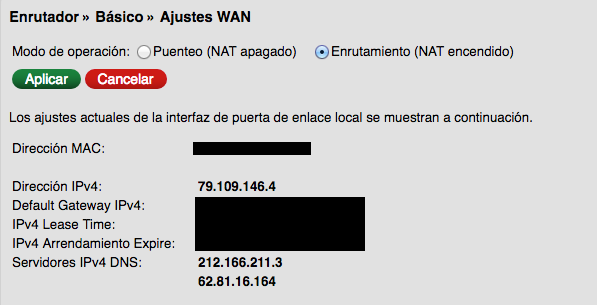
El siguiente paso será crear una redirección de puerto para que cuando se acceda desde el exterior al puerto 80 (puerto HTTP) del equipo local, las solicitudes sean redirigidas al servidor, que ahora ya tiene una IP fija.
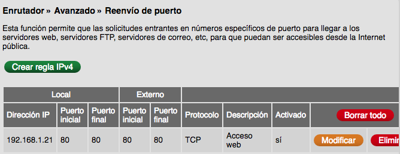
Una vez creada la regla, se comprueba que si se accede a dicha dirección externa, se accede al servidor web.
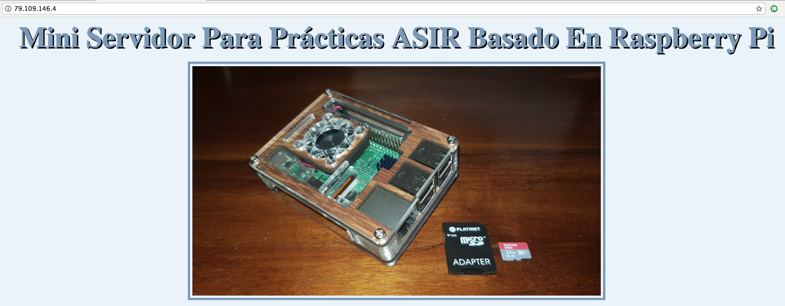
Ahora ya se tiene acceso al servidor a través de la ip externa asignada por el proveedor de servicios, pero como esa dirección es cambiada aleatoriamente por el isp (ya que es dinámica) y además no es muy “amigable”, se va a utilizar un nombre de dominio previamente adquirido y seguir los pasos para configurar la actualización de la IP externa en cada momento al nombre de dominio.
En el ejemplo, se puede ver una imagen de la configuración del dominio en www.strato.es, que es la web donde se ha adquirido el dominio pero, básicamente, la solución pasa por configurar el dominio que proporciona strato.es como dinámico e instalar un software que se encargue de mantener actualizada en el mismo la información de la IP externa cuando ésta cambie.
El DNS dinámico (DDNS) es un servicio que permite la actualización en tiempo real de la información sobre nombres de dominio situada en un servidor de nombres. El uso más común que se le da es permitir la asignación de un nombre de dominio de Internet a un dispositivo con dirección IP variable (dinámica). Esto permite conectarse con la máquina en cuestión sin necesidad de tener conocimiento de que dirección IP posee en ese momento.
El DNS dinámico hace posible utilizar un software de servidor en un dispositivo con dirección IP dinámica (como la suelen facilitar muchos ISP) para, por ejemplo, alojar un sitio web en un PC de casa, sin necesidad de contratar un hosting de terceros. Los routers actuales suelen incluir funciones de actualización de la IP en este tipo de servicios, por lo que, una vez configurado el router, la actualización de la IP se convierte en un proceso totalmente invisible para el usuario puesto que es el propio router el que se encarga de actualizar la IP cuando esta cambia.
Para poder realizar esta tarea es necesario instalar un cliente de DDNS, existen numerosos programas para ello, entre los cuales destaca ddclient, en esta web se puede encontrar todo lo necesario para su instalación y configuración.
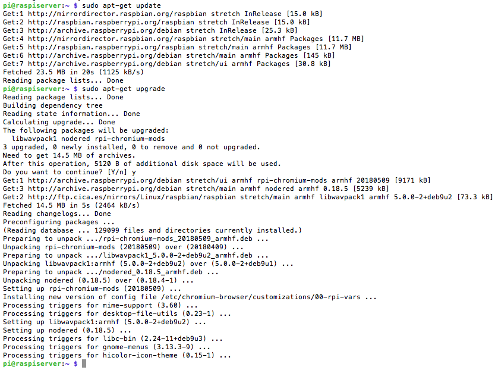
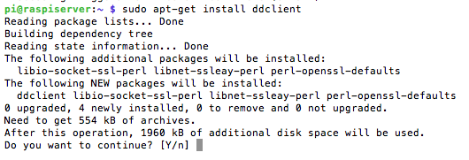
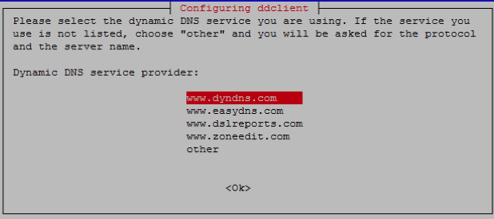
Aquí se puede seleccionar alguno de los proveedores que muestra ddclient, o seleccionar "other" para introducir uno propio como es nuestro caso, ya que se va a usar el proporcionado por www.strato.es, en el faq de ayuda de strato se muestra información de los datos que hay que introducir, faq strato.
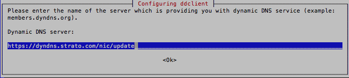
Se selecciona el protocolo dyndns2:
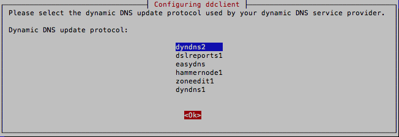
Se introduce el usuario y la contraseña:
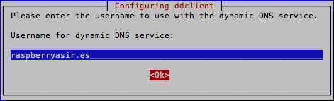
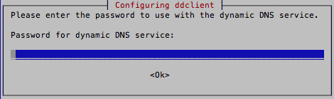
Solicita la interfaz que se va a utilizar, aunque más tarde se cambiaran estos datos en el archivo de configuración de ddclient que se encuentra en /etc/ddclient.conf
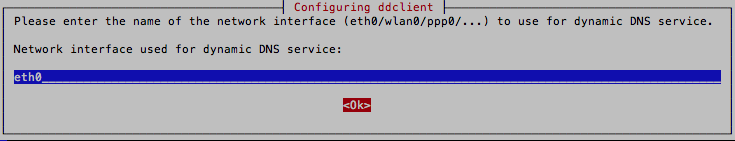
En caso de que haya subdominios se pueden añadir aquí, aunque también se pueden añadir más tarde en el archivo de configuración.
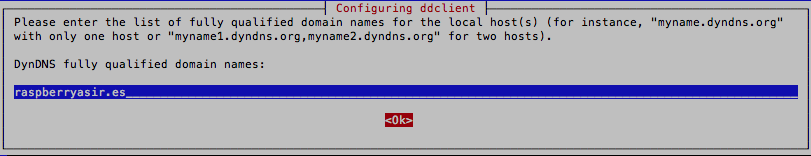
En cualquier momento se puede volver a iniciar el proceso de configuración ejecutando $ sudo dpkg-reconfigure ddclient.
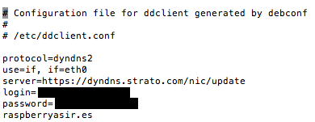
Y este como debe quedar para que funcione correctamente con strato:
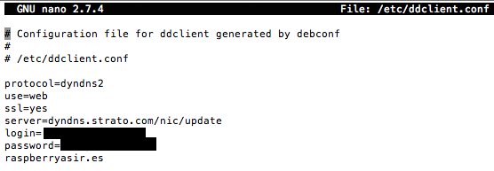
Para comprobar el correcto funcionamiento de ddclient, podemos ejecutar el programa en modo debug con la siguiente orden: $ sudo ddclient -daemon=0 -noquiet -debug, se puede observar que usando los datos de la primera captura del archivo ddclient.conf, devuelve los siguientes mensajes de aviso:
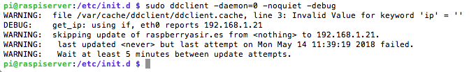
Y una vez modificado el archivo de configuración, ya funciona correctamente:
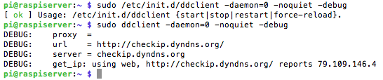
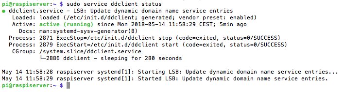
Si se quiere obtener más información se puede ejecutar $ sudo ddclient -daemon=0 -noquiet -debug -verbose:
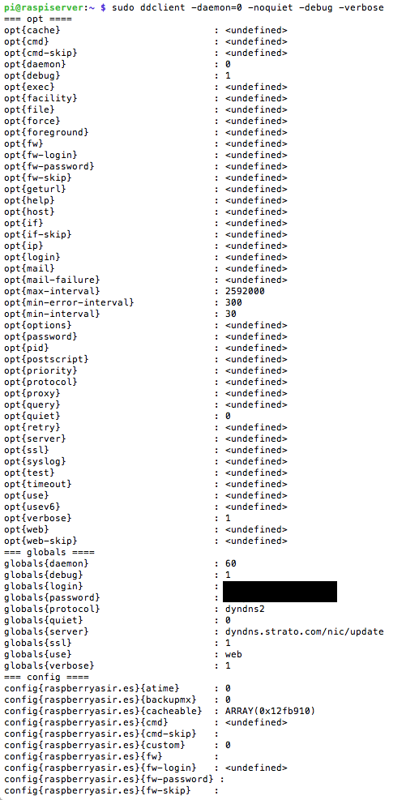
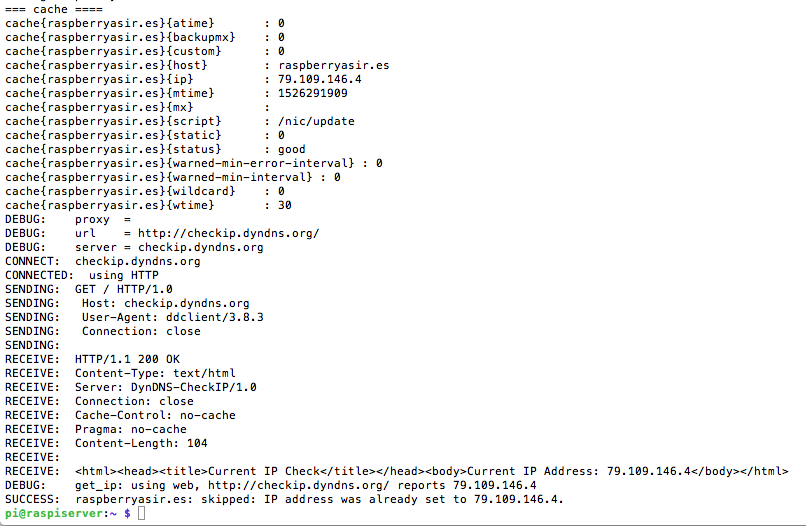
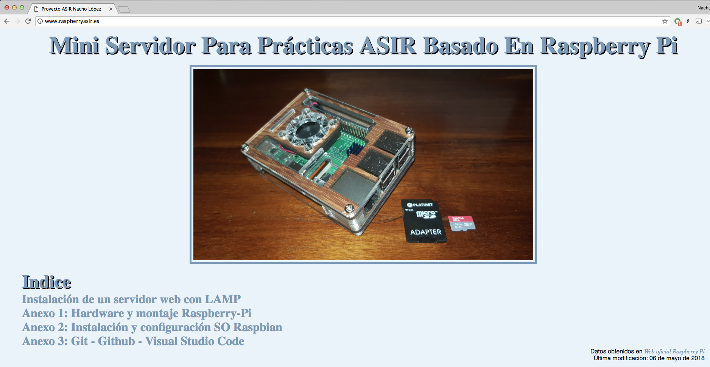
Esta página forma parte del proyecto Mini servidor para prácticas ASIR por Nacho López, que se distribuye bajo una Licencia Creative Commons Reconocimiento-CompartirIgual 4.0 Internacional (CC BY-SA 4.0).